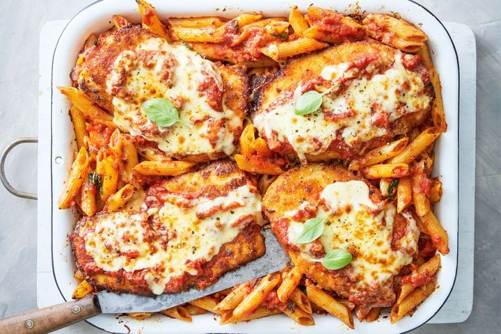

Chicken Parm

Description
Chicken Parmesan Pasta is a delightful and savory Italian-inspired dish that brings together
the comforting flavors of tender chicken, al dente pasta, and rich tomato sauce.
Succulent chicken breasts are breaded and pan-fried to golden perfection,
providing a crispy contrast to the smooth texture of the pasta.
The chicken is then generously smothered in marinara sauce,
adorned with melted mozzarella and Parmesan cheese, creating a gooey,
cheesy goodness that blankets every bite.
The pasta, whether it's spaghetti or another favorite, acts as the perfect canvas to
absorb the flavors of the tomato sauce and the cheesy, savory chicken.
Garnished with fresh basil or parsley, this Chicken Parmesan Pasta is a flavorful and
satisfying meal that embodies the heartiness of classic Italian comfort food.
Ingredients
- cooking spray
- 1 (16 ounce) package skinless, boneless chicken breasts (such as Perdue®)
- 4 slices mozzarella cheese
- 2 cups tomato sauce, or to taste
Steps
- Preheat the oven to 375 degrees F (190 degrees C).
Spray a baking pan with cooking spray.
Place chicken on the prepared pan.
- Bake in the preheated oven for 20 minutes, flipping chicken after 12 minutes.
Remove from the oven, add desired amount of sauce,
and top each breast with mozzarella cheese.
- Bake until cheese is melted and chicken is no longer pink in the center and
the juices run clear, about 12 more minutes. An instant-read thermometer inserted
into the center should read at least 165 degrees F (74 degrees C).